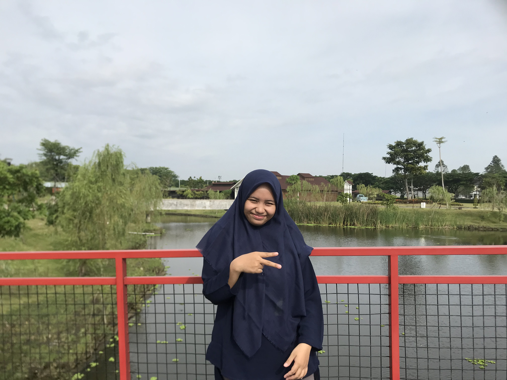

~About Me

Anggun Kurniatul Hidayah
Hi guys, I'm Anggun Kurniatul Hidayah. You can call me Anggun. I,m an active student majoring in informatics engineering at State University of Surabaya. I am interested in studying informatics where we can perform analysis to solve a problem by designing software as a solution. I am also very interested and open to learn new things about programming and current technological developments. Right now, I'm learning about Front-End Web Development in an independent study program at Skilvul #Tech4Impact Kampus Merdeka Cycle 4: Front-End Web Development.